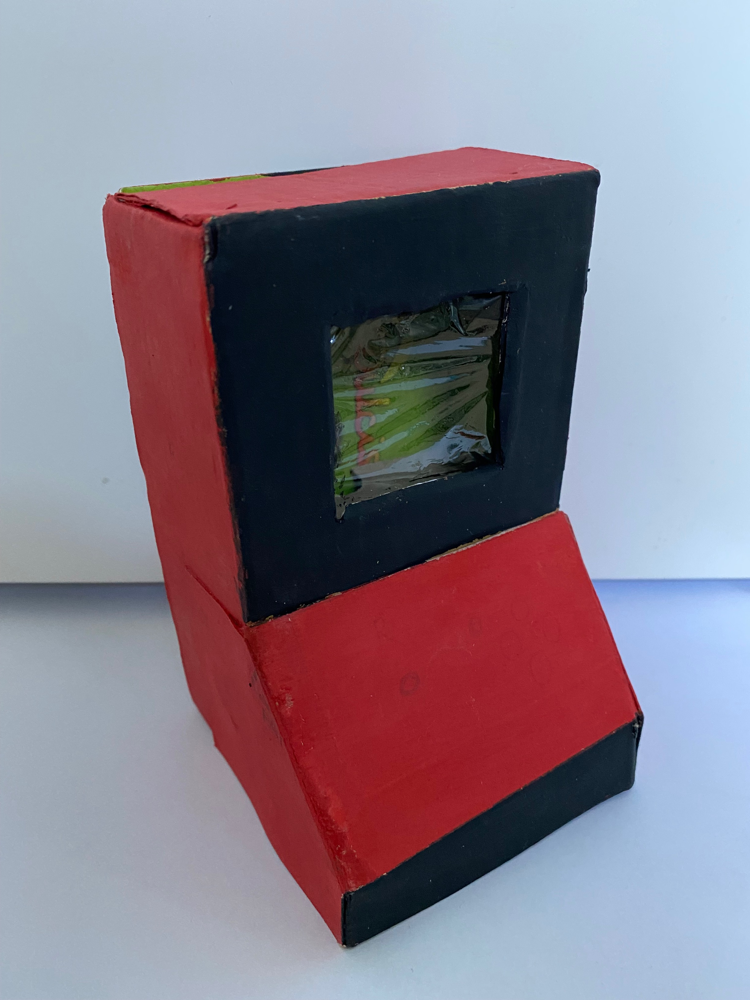
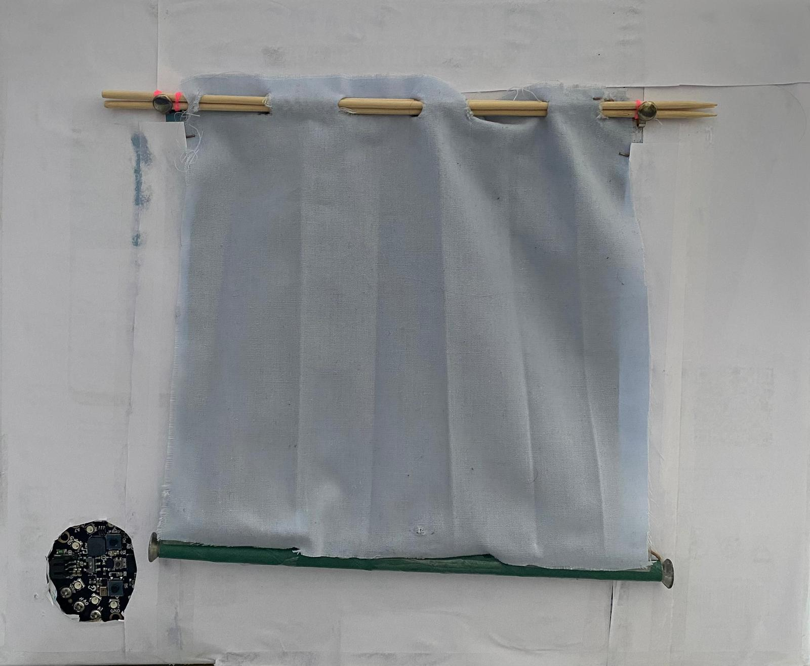
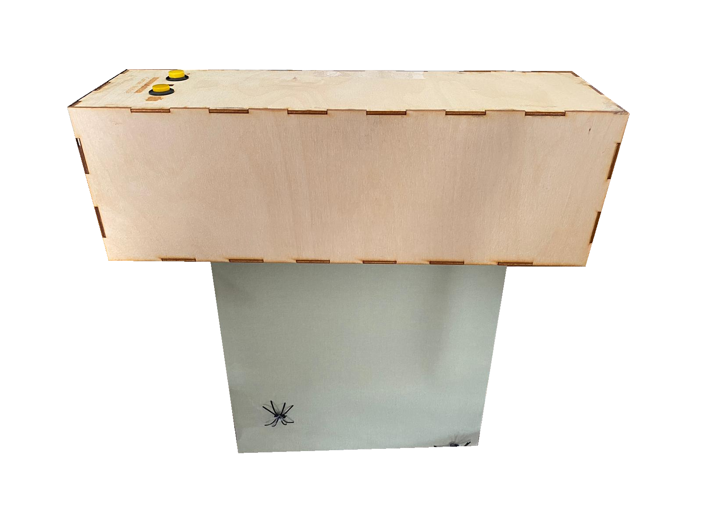
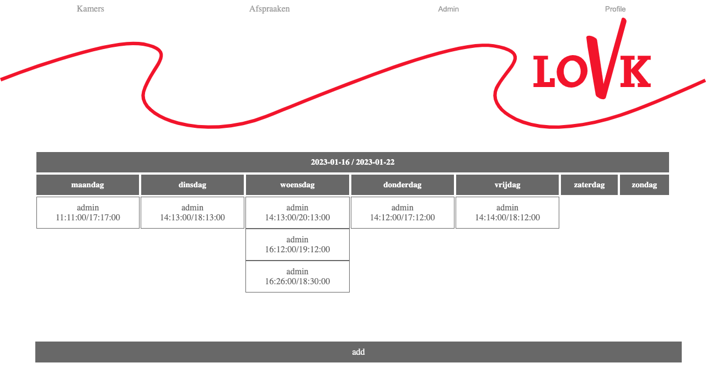

Arcade mechiene
Dit is een arcade mechiene die om de 10 minuten een challinge geven.
Dit doet hij door een random kleur aan tegeven.
Achter op staat dan welke kleur welke challinge moet doen.

Gordijn
Dit is de eerste versie van het gordijn.
dit is een deel van het project dat ik met drie andere hebt gemaakt.
het hele project is een afstandsbedieningsproject. M.b.v. de afstandsbediening kan je drie verschillende onderdelen bedienen.
Mijn deel is het gordijnmodule. deze gordijn kunt u op afstand kan worden geopend of gesloten.
Dit kan op verschillende hoogtes worden gezet en de hoogte kan daarna ook weer worden aangepast door verder omhoog of omlaag te gaan.

Gordijn V2
Dit is de tweede versie van het gordijn.
Dit is het zelfde project alleen zijn er aanpassingen gemaakt zo dat het nog beter werkt voor de rest is het nogsteed het zelfde.
dit is een deel van het project dat ik met drie andere hebt gemaakt.
het hele project is een afstandsbedieningsproject. M.b.v. de afstandsbediening kan je drie verschillende onderdelen bedienen.
Mijn deel is het gordijnmodule. deze gordijn kunt u op afstand kan worden geopend of gesloten.
Dit kan op verschillende hoogtes worden gezet en de hoogte kan daarna ook weer worden aangepast door verder omhoog of omlaag te gaan.

Kamer reservering LOVK
Dit is een website gemaakt voor de LOVK (Landelijke Onderwijs aan Varende Kinderen).
Op de hoofdlocatie zijn meerdere ruimtes waar er vergaderd kan worden.
Het afstemmen van het gebruik van de verschillende ruimtes is een terugkerend probleem.
Soms zitten zelfs alle ruimtes vol en dan hebben sommige werknemers geen plaats om ergens te overleggen of te vergaderen.
Op andere momenten zijn de ruimtes leeg.
Als oplossing voor dit probleem ga ik een reserveringssysteem maken zodat de verschillende werknemers die ruimtes kunnen reserveren.
Zo kunnen de werknemers op een centrale plaats ruimtes reserveren voor bepaalde tijden en de ruimtes kunnen dan ook effectiever benut worden.